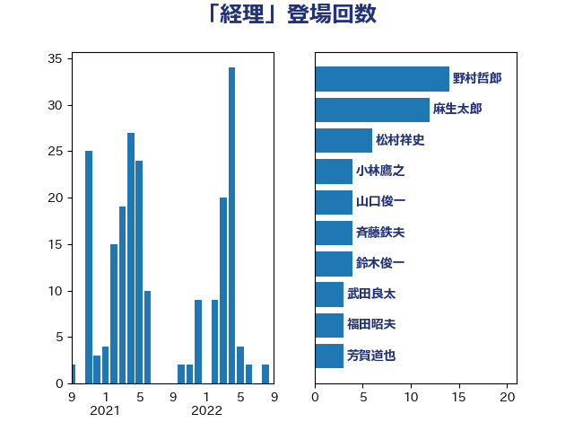

単語「経理」

| 野村哲郎 | 自由民主党 | 14 回 |
| 麻生太郎 | 自由民主党 | 12 回 |
| 松村祥史 | 自由民主党 | 6 回 |
| 小林鷹之 | 自由民主党 | 4 回 |
| 山口俊一 | 自由民主党 | 4 回 |
| 斉藤鉄夫 | 公明党 | 4 回 |
| 鈴木俊一 | 自由民主党 | 4 回 |
| 武田良太 | 自由民主党 | 3 回 |
| 福田昭夫 | 立憲民主党 | 3 回 |
| 芳賀道也 | 国民民主党 | 3 回 |
| 高木毅 | 自由民主党 | 3 回 |
| 塩川鉄也 | 日本共産党 | 2 回 |
| 小沼巧 | 立憲民主党 | 2 回 |
| 山本博司 | 公明党 | 2 回 |
| 沢田良 | 日本維新の会 | 2 回 |
| 義家弘介 | 自由民主党 | 2 回 |
| 鈴木馨祐 | 自由民主党 | 2 回 |
| 伊藤孝恵 | 国民民主党 | 1 回 |
| 伊藤岳 | 日本共産党 | 1 回 |
| 加藤勝信 | 自由民主党 | 1 回 |
| 原口一博 | 立憲民主党 | 1 回 |
| 古賀之士 | 立憲民主党 | 1 回 |
| 吉田統彦 | 立憲民主党 | 1 回 |
| 坂本哲志 | 自由民主党 | 1 回 |
| 大串博志 | 立憲民主党 | 1 回 |
| 大西健介 | 立憲民主党 | 1 回 |
| 守島正 | 日本維新の会 | 1 回 |
| 宮本岳志 | 日本共産党 | 1 回 |
| 山本香苗 | 公明党 | 1 回 |
| 末次精一 | 立憲民主党 | 1 回 |
| 本村伸子 | 日本共産党 | 1 回 |
| 梅村聡 | 日本維新の会 | 1 回 |
| 池下卓 | 日本維新の会 | 1 回 |
| 牧島かれん | 自由民主党 | 1 回 |
| 矢倉克夫 | 公明党 | 1 回 |
| 稲富修二 | 立憲民主党 | 1 回 |
| 緒方林太郎 | 無所属 | 1 回 |
| 萩生田光一 | 自由民主党 | 1 回 |
| 阿部知子 | 立憲民主党 | 1 回 |
| 馬淵澄夫 | 立憲民主党 | 1 回 |
| 高木かおり | 日本維新の会 | 1 回 |
| 黄川田仁志 | 自由民主党 | 1 回 |